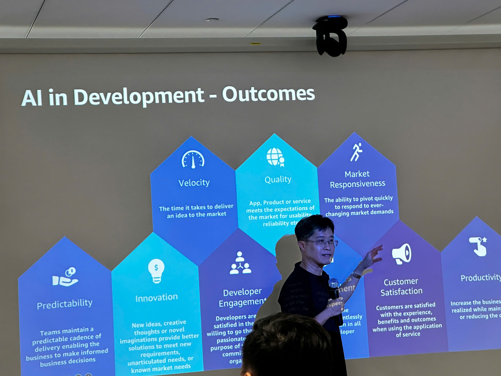
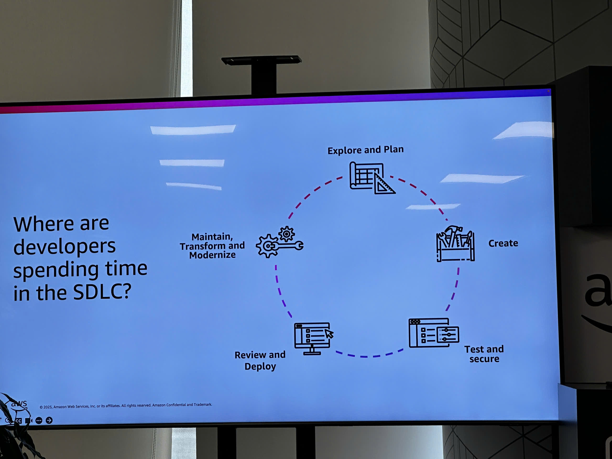
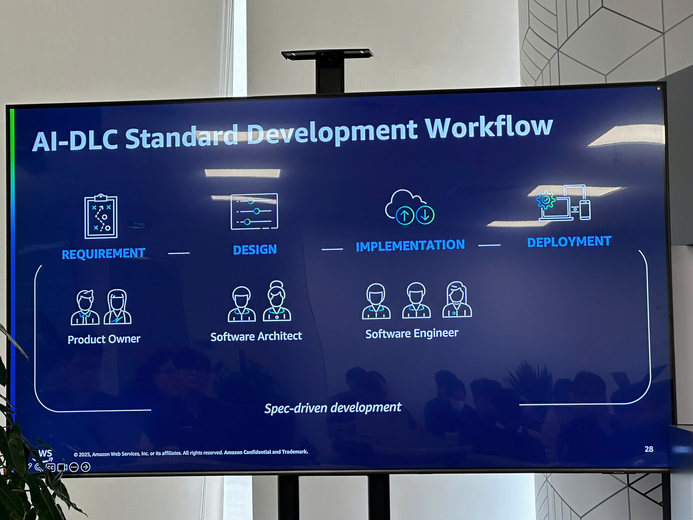
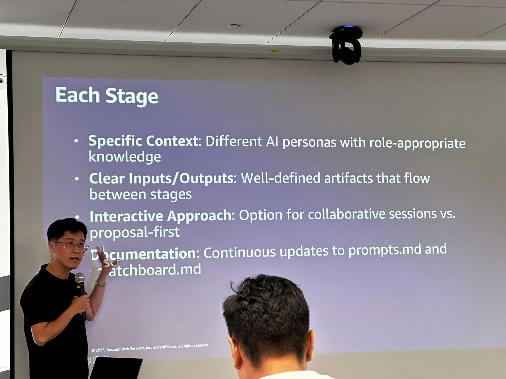
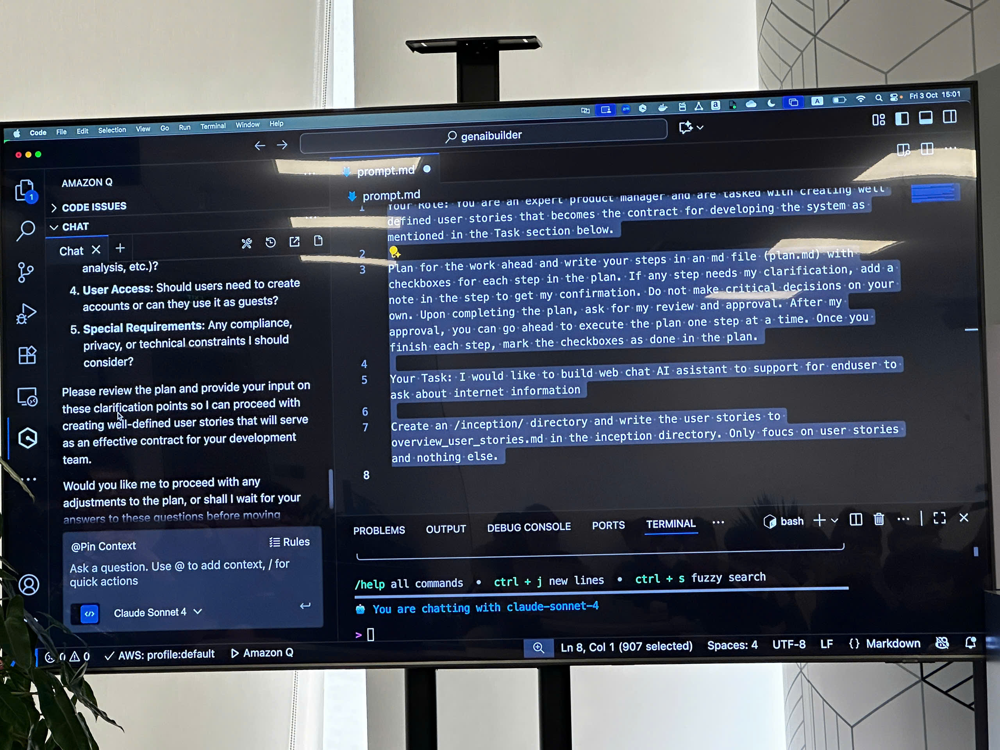
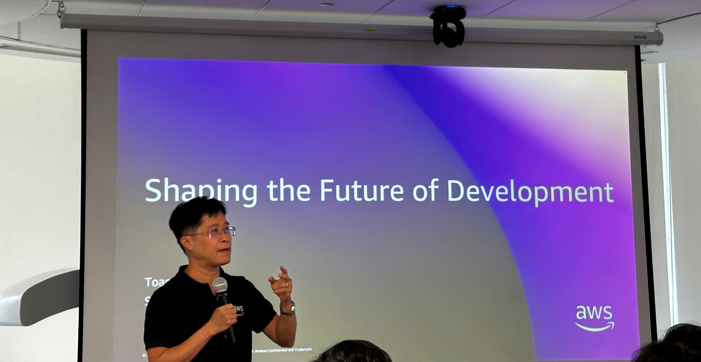
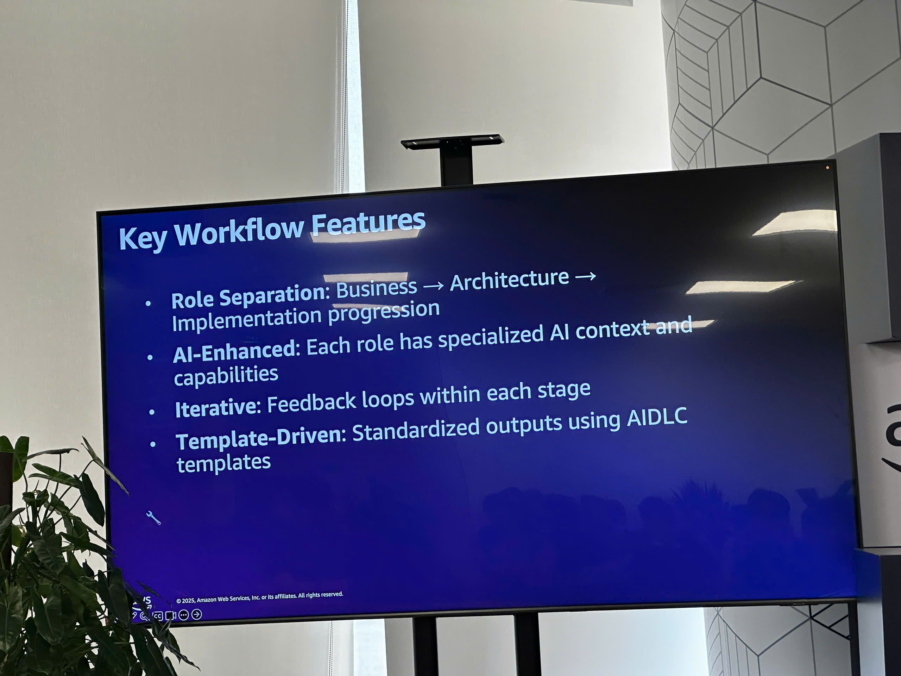
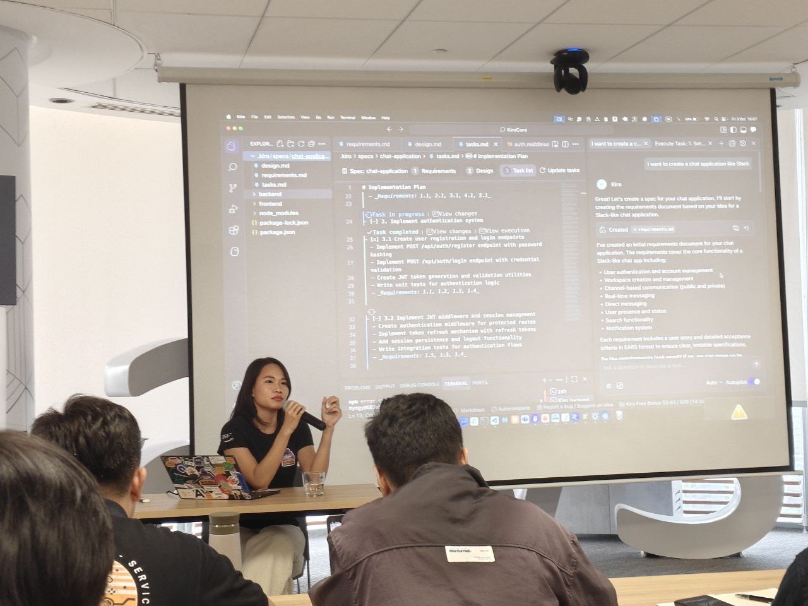
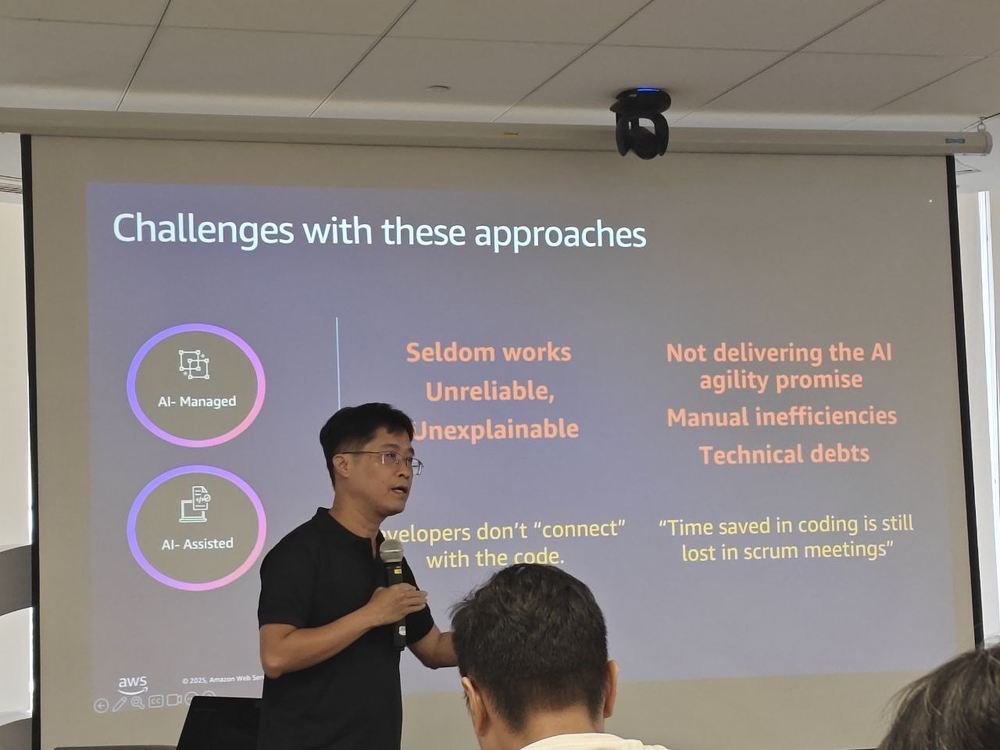
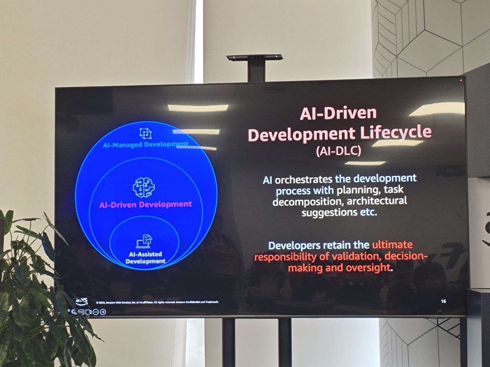

Event 2
⚠️ Lưu ý: Các thông tin dưới đây chỉ nhằm mục đích tham khảo, vui lòng không sao chép nguyên văn cho bài báo cáo của bạn kể cả warning này.
AI-Driven Development Workshop – Shaping the Future of Development
Địa điểm: AWS Event Hall, Tầng 26 – Bitexco Tower, TP. Hồ Chí Minh
Thời gian: 14:00 – 16:30, Thứ Sáu, ngày 3/10/2025
Diễn giả: anh Toan Huynh, chị My Nguyen
Điều phối: Diem My, Dai Truong, Dinh Nguyen
Mục tiêu sự kiện
- Chia sẻ xu hướng mới trong phát triển phần mềm do AI điều phối (AI-Driven Development).
- Giới thiệu khung phát triển AI-Driven Development Lifecycle (AI-DLC) – mô hình tích hợp AI xuyên suốt vòng đời phát triển phần mềm.
- Trình diễn thực tế hai công cụ quan trọng: Amazon Q Developer và Kiro IDE Extension.
- Phân tích cách AI hỗ trợ nâng cao năng suất, tốc độ và chất lượng sản phẩm phần mềm.
- Định hướng vai trò tương lai của AI trong phát triển phần mềm hiện đại.
Nội dung và điểm nổi bật
1. Phần mở đầu – Định hình tương lai phát triển phần mềm
Anh Toan Huynh mở đầu với chủ đề “Shaping the Future of Development”, nhấn mạnh sự chuyển dịch từ mô hình phát triển truyền thống sang AI-Orchestrated Development – nơi AI đóng vai trò hỗ trợ, điều phối quy trình từ lập kế hoạch, thiết kế, lập trình đến kiểm thử và triển khai.
2. Thách thức trong các mô hình phát triển hiện nay
Các mô hình AI-Assisted Development và AI-Managed Development vẫn còn hạn chế: thiếu ổn định, khó giải thích, chưa thực sự đạt được lời hứa “tăng tốc bằng AI”.
Từ đó, diễn giả giới thiệu khái niệm AI-Driven Development (AI-DD) – cách tiếp cận dung hòa giữa tự động hóa và quyền kiểm soát của con người.
3. Mô hình AI-Driven Development Lifecycle (AI-DLC)
AI-DLC được chia thành ba cấp độ tiến hóa:
- AI-Assisted Development: AI hỗ trợ sinh mã, gợi ý, kiểm tra cú pháp.
- AI-Driven Development: AI tham gia vào thiết kế kiến trúc, lập kế hoạch và hỗ trợ ra quyết định.
- AI-Managed Development: AI tự động điều phối quy trình phát triển với sự phê duyệt của con người.
Trong mô hình này, AI đóng vai trò “điều phối viên thông minh”, còn nhà phát triển vẫn giữ quyền quyết định và trách nhiệm xác minh đầu ra.
4. Lợi ích của AI trong phát triển phần mềm
Theo phần trình bày “AI in Development – Outcomes”, việc tích hợp AI đem lại bảy lợi ích nổi bật:
- Predictability: Duy trì tiến độ và giúp doanh nghiệp dự đoán chính xác lịch trình phát hành.
- Velocity: Tăng tốc độ đưa ý tưởng ra thị trường.
- Quality: Giảm lỗi và cải thiện độ ổn định của phần mềm.
- Innovation: Gợi mở ý tưởng và hướng tiếp cận mới.
- Developer Engagement: Tăng hứng thú và hiệu quả công việc của lập trình viên.
- Customer Satisfaction: Nâng cao trải nghiệm và sự hài lòng của người dùng.
- Productivity: Giảm thời gian phát triển, tăng hiệu quả tổng thể.
5. Chu trình phát triển phần mềm (SDLC)
Theo sơ đồ “Where are developers spending time in the SDLC?”, quy trình phát triển gồm các giai đoạn:
Explore & Plan → Create → Test & Secure → Review & Deploy → Maintain, Transform & Modernize.
AI giúp rút ngắn thời gian trong các khâu tốn công như kiểm thử, triển khai và bảo trì thông qua tự động hóa và phân tích thông minh.
6. Quy trình tiêu chuẩn AI-DLC
Slide “AI-DLC Standard Development Workflow” trình bày bốn bước cốt lõi của quy trình phát triển chuẩn:
- Requirement: Product Owner thu thập và phân tích yêu cầu.
- Design: Software Architect thiết kế kiến trúc, quy trình và API.
- Implementation: Software Engineer triển khai, kiểm thử và tích hợp.
- Deployment: Triển khai và giám sát hệ thống.
AI hỗ trợ xuyên suốt cả bốn giai đoạn, giúp quy trình trở nên nhất quán, rõ ràng và hiệu quả hơn.
7. Đặc điểm của quy trình AI-DLC
Theo slide “Key Workflow Features”, quy trình có các đặc trưng chính:
- Role Separation: Phân tách rõ giữa nghiệp vụ – kiến trúc – triển khai.
- AI-Enhanced: Mỗi vai trò có ngữ cảnh AI riêng, phù hợp với chuyên môn.
- Iterative: Có vòng phản hồi liên tục giữa các giai đoạn.
- Template-Driven: Chuẩn hóa đầu ra bằng các mẫu AIDLC thống nhất.
8. AI trong từng giai đoạn phát triển
Slide “Each Stage” mô tả rõ cách AI được tích hợp:
- Specific Context: Mỗi vai trò (PM, Architect, Developer) có AI persona riêng.
- Clear Inputs/Outputs: Định nghĩa rõ ràng đầu vào – đầu ra giữa các bước.
- Interactive Approach: Hỗ trợ cộng tác và phản hồi song song giữa AI và con người.
- Documentation: Liên tục cập nhật tài liệu như prompts.md, dashboard.md để theo dõi tiến trình và cải thiện mô hình.
9. Demo thực tế: Amazon Q Developer và Kiro IDE
Amazon Q Developer
- Trợ lý AI tích hợp trong IDE (VS Code, Cloud9…).
- Tự động sinh mã, kiểm thử, viết tài liệu và đề xuất kiến trúc AWS.
- Hỗ trợ cập nhật prompt.md và tự động hóa quy trình CI/CD.
- Demo thực tế minh họa khả năng tạo kế hoạch phát triển, viết user stories và quản lý project thông qua lệnh AI.
Kiro IDE (trình bày bởi chị My Nguyen)
- IDE mở rộng giúp tạo và quản lý tài liệu đặc tả (requirements.md, design.md, tasks.md).
- AI có thể tạo mô tả tính năng, định nghĩa luồng API, sinh code backend.
- Phần demo minh họa quá trình tạo ứng dụng Chat có xác thực người dùng bằng AI, bao gồm đăng nhập, đăng ký và xử lý token.
Bài học rút ra
- AI không thay thế lập trình viên, mà trở thành “đồng đội thông minh” hỗ trợ họ ở mọi giai đoạn.
- Mô hình AI-DLC giúp chuẩn hóa quy trình, đảm bảo minh bạch và nhất quán trong phát triển phần mềm.
- Amazon Q Developer giúp tiết kiệm thời gian, giảm lỗi và hỗ trợ kiểm thử – triển khai tự động.
- Kiro IDE minh chứng cho khả năng AI hỗ trợ toàn diện từ đặc tả đến sinh mã.
- Việc tích hợp AI vào DevSecOps là xu hướng tất yếu để đạt năng suất cao và đảm bảo bảo mật.
Ứng dụng thực tế
- Áp dụng Amazon Q Developer để tự động hóa kiểm thử và tạo tài liệu trong dự án nội bộ.
- Sử dụng Kiro IDE để chuẩn hóa quy trình đặc tả và viết mã backend nhanh chóng.
- Tổ chức sprint AI-Driven nhằm đánh giá hiệu quả AI trong nhóm phát triển phần mềm.
- Triển khai mô hình “AI-Assisted Code Review” để tối ưu chất lượng sản phẩm.
Cảm nhận cá nhân
Buổi workshop “AI-Driven Development Workshop” là một trải nghiệm chuyên sâu và thực tiễn.
Phần trình bày của anh Toan Huynh về vai trò của AI trong tương lai phát triển phần mềm mang tính định hướng rất cao, giúp tôi hiểu rõ hơn về mối quan hệ giữa AI và con người trong quy trình phát triển.
Phần trình diễn thực tế của chị My Nguyen với Kiro IDE là điểm nhấn nổi bật, thể hiện rõ cách AI có thể hỗ trợ lập trình viên từ việc viết đặc tả đến tự động hóa sinh mã.
Sự kiện giúp tôi nhận thức sâu sắc rằng AI không chỉ là công cụ hỗ trợ, mà là nền tảng chiến lược giúp doanh nghiệp đổi mới nhanh hơn, chính xác hơn và bền vững hơn.
Một số hình ảnh sự kiện
Hình 1 – AI in Development – Outcomes

8 lợi ích của AI trong phát triển phần mềm: Predictability, Innovation, Developer Engagement, Velocity, Quality, Market Responsiveness, Customer Satisfaction, Productivity.
Hình 2 – Where are developers spending time in the SDLC?

Chu trình SDLC: Explore & Plan → Create → Test & Secure → Review & Deploy → Maintain, Transform & Modernize.
Hình 3 – AI-DLC Standard Development Workflow

4 bước: Requirement (Product Owner) → Design (Software Architect) → Implementation (Software Engineer) → Deployment.
Hình 4 – Each Stage

Tích hợp AI: Specific Context, Clear Inputs/Outputs, Interactive Approach, Documentation.
Hình 5 – Demo Amazon Q Developer

Demo Amazon Q Developer - AI hỗ trợ tạo tài liệu đặc tả, sinh user stories và gợi ý code.
Hình 6 – Shaping the Future of Development

"Định hình tương lai phát triển phần mềm" (anh Toan Huynh).
Hình 7 – Key Workflow Features

4 đặc điểm: Role Separation, AI-Enhanced, Iterative, Template-Driven.
Hình 8 – Demo Kiro IDE (chị My Nguyen)

Demo Kiro IDE - AI tự động sinh mã backend và tạo tài liệu (requirements.md, design.md, tasks.md).
Hình 9 – Challenges with these approaches

Thách thức của AI-Assisted và AI-Managed: chưa hiệu quả, thiếu ổn định, khó giải thích.
Hình 10 – AI-Driven Development Lifecycle (AI-DLC)

3 tầng: AI-Assisted → AI-Driven → AI-Managed Development. AI điều phối, developers giữ trách nhiệm.